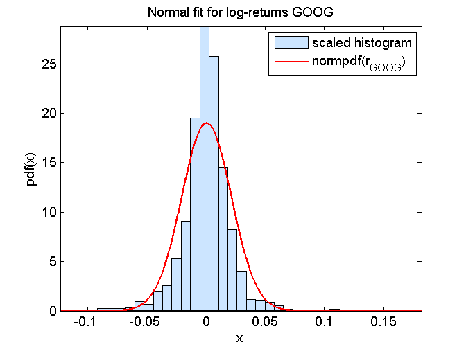
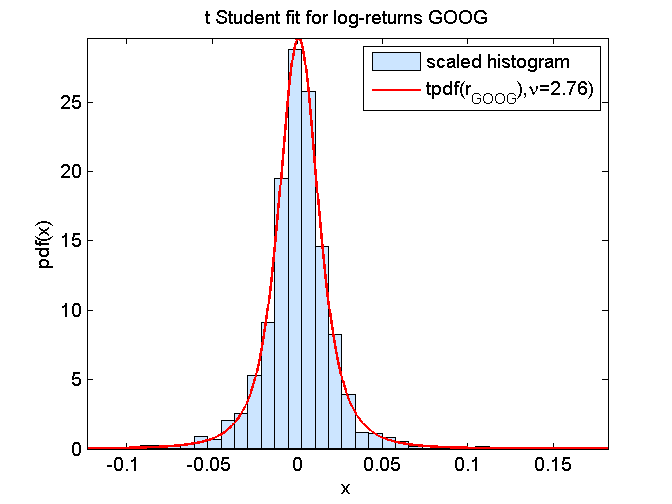

Contents
function demo_fit2pdf
demo_fit2pdf: model calibration using Maximum Likelihood
Sample
data = load('closingPrices_IBM_GOOG_SI_2007_07_01_2013_06_30.txt');
S_GOOG = data(:,2)';
r_GOOG = log(S_GOOG(2:end)./S_GOOG(1:end-1));
Gaussian fit
mu0 = 0.0;
sigma0 = 1.0;
[LL, mu,sigma] = fit2pdf(r_GOOG,@normpdf,[mu0,sigma0])
mean(r_GOOG)
std(r_GOOG,1)
modelPdf = @(x)(normpdf(x,mu,sigma));
figure(1); clf
graphicalComparisonPdf(r_GOOG,modelPdf)
title('Normal fit for log-returns GOOG')
legend('scaled histogram','normpdf(r_{GOOG})')
LL =
2.445380584469096
mu =
3.474675416799983e-04
sigma =
0.021000897123258
ans =
3.358174571778677e-04
ans =
0.020977170567215

Student's t fit
mu0 = mean(r_GOOG);
nu0 = 5;
sigma0 = sqrt(var(r_GOOG)*(nu0-2)/nu0);
[LL, mu,sigma,nu] = fit2pdf_con(r_GOOG,@locationScaleTpdf,[mu0,sigma0,nu0],...
[-Inf 1e-5 1e-5], [Inf Inf Inf])
modelPdf = @(x)(locationScaleTpdf(x,mu,sigma,nu));
figure(2); clf
graphicalComparisonPdf(r_GOOG,modelPdf)
title('t Student fit for log-returns GOOG')
legend('scaled histogram',sprintf('tpdf(r_{GOOG}),%s=%.3g)','\nu',nu))
Local minimum found that satisfies the constraints.
Optimization completed because the objective function is non-decreasing in
feasible directions, to within the default value of the function tolerance,
and constraints are satisfied to within the default value of the constraint tolerance.
LL =
2.590546624680620
mu =
7.590496884822403e-04
sigma =
0.012315056253360
nu =
2.755242012600202
